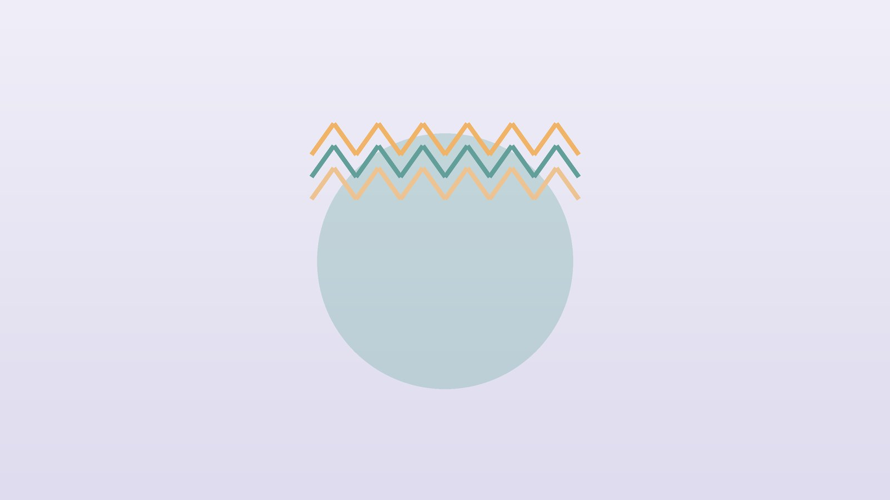

건강 칼럼 · 두통·얼굴·신경 · 인천 서구 가정동·청라 두통 한의원
진통제가 늘어만 간다면, 반복되는 두통과 편두통 한방 치료

나의 두통은 어떤 모습일까?
- 머리 한쪽이 욱신거리고 빛과 소리에 예민해진다
- 머리를 띠로 조이는 듯 양쪽이 뻐근하다
- 오후가 되면 뒷목이 뻣뻣해지며 머리가 아프다
- 생리 전후로 두통이 심해진다
- 진통제를 한 달에 열흘 넘게 먹는다
- 두통 때문에 일이나 약속을 미룬 적이 있다
이 체크리스트는 진단 도구가 아니라 상담이 필요한지 가늠해 보는 참고용입니다.
두통에는 어떤 종류가 있나요?
국제두통질환분류(ICHD-3)는 두통을 다른 질환 없이 생기는 일차성 두통과, 다른 원인 때문에 생기는 이차성 두통으로 나눕니다.
- 편두통: 머리 한쪽이 욱신거리며 빛과 소리에 예민해지고 메스꺼움이 동반됩니다. 움직이면 심해집니다.
- 긴장형 두통: 머리를 띠로 조이는 듯한 양쪽 두통으로, 목과 어깨 긴장과 함께 옵니다.
- 약물과용 두통: 진통제를 한 달에 10~15일 이상 먹으면 오히려 두통이 잦아지는 상태입니다.
바로 응급실에 가야 하는 두통
- 벼락 치듯 갑자기 시작된 생애 최악의 두통
- 발열과 목이 뻣뻣해지는 증상이 함께 있는 두통
- 말이 어눌하거나 팔다리에 힘이 빠지거나 시야가 좁아지는 두통
- 머리를 부딪친 뒤 점점 심해지는 두통
- 50세 이후 처음 생겼거나 양상이 갑자기 바뀐 두통
이런 신호가 있다면 지체하지 말고 응급실이나 신경과 진료를 받으세요.
한의학은 아픈 부위로 두통을 봅니다
한의학에서는 머리를 지나는 경락에 따라 아픈 부위로 원인을 구분했습니다. 이를 경락 변증이라 합니다.
- 이마 두통: 양명경(陽明經)이 지나는 곳으로, 위장의 열이나 코 질환과 관련이 많습니다.
- 관자놀이·옆머리 두통: 소양경(少陽經)이 지나는 곳으로, 편두통처럼 스트레스와 열이 오를 때 잘 생깁니다.
- 뒷머리·뒷목 두통: 태양경(太陽經)이 지나는 곳으로, 목 긴장과 찬 바람에 의한 두통이 많습니다.
- 정수리 두통: 궐음경(厥陰經)과 연결되며, 깊은 피로나 차가운 기운과 관련된다고 보았습니다.
이렇게 아픈 부위에 따라 침 자리와 처방에 쓰는 약재가 달라집니다. 같은 '두통'이라도 어디가 아픈지 정확히 말씀해 주시는 것이 중요한 이유입니다.
나는 어떤 유형의 두통일까?
1. 간양두통(肝陽頭痛) 스트레스로 욱신거리는 유형
- 이런 분에게 많아요
- 스트레스가 많고 성격이 급한 분, 편두통이 있는 분
- 나타나는 모습
- 관자놀이가 욱신거리고 화가 나면 심해진다
- 함께 오는 몸의 신호
- 눈 충혈, 얼굴 열감, 잠들기 어려움
- 진찰에서 보이는 모습
- 맥이 팽팽하고 혀가 붉음
- 치료 방향
- 오른 열을 내리는 방향 (천마구등음 계열)
- 오늘부터 해 볼 것
- 두통 전조가 느껴지면 어두운 곳에서 잠시 쉬세요.
2. 담탁두통(痰濁頭痛) 머리가 무겁고 메스꺼운 유형
- 이런 분에게 많아요
- 몸이 무겁고 기름진 음식을 즐기는 분
- 나타나는 모습
- 머리가 솜이 낀 듯 무겁고 속이 메스껍다
- 함께 오는 몸의 신호
- 어지러움, 가슴 답답함
- 진찰에서 보이는 모습
- 설태가 두껍고 맥이 미끄러움
- 치료 방향
- 담음을 걷어 내는 방향 (반하백출천마탕 계열)
- 오늘부터 해 볼 것
- 과식과 늦은 저녁을 피하세요.
3. 기혈허두통(氣血虛頭痛) 피곤하면 오는 유형
- 이런 분에게 많아요
- 과로가 잦고 빈혈 경향이 있는 분
- 나타나는 모습
- 은근하게 아프고 피곤하거나 오후에 심해진다
- 함께 오는 몸의 신호
- 무기력, 어지러움, 얼굴이 창백함
- 진찰에서 보이는 모습
- 혀가 창백하고 맥이 약함
- 치료 방향
- 기혈을 채우는 방향 (보중익기탕·팔진탕 계열)
- 오늘부터 해 볼 것
- 끼니를 거르지 말고 낮에 짧게 쉬세요.
4. 풍한두통(風寒頭痛) 뒷목이 뻣뻣해지는 유형
- 이런 분에게 많아요
- 찬 바람에 노출되거나 오래 앉아 일하는 분
- 나타나는 모습
- 뒷머리와 뒷목이 뻣뻣하게 당기며 아프다
- 함께 오는 몸의 신호
- 어깨 결림, 찬 바람에 악화
- 진찰에서 보이는 모습
- 맥이 뜨고 팽팽함
- 치료 방향
- 찬 기운을 풀고 목을 이완하는 방향 (갈근탕·천궁다조산 계열)
- 오늘부터 해 볼 것
- 목에 스카프를 두르고 따뜻하게 하세요.
한의원에서는 어떻게 진찰하나요?
- 두통 일기 확인: 빈도, 부위, 강도, 지속 시간, 먹은 약, 유발 요인을 함께 봅니다.
- 목과 어깨: 뒷목, 어깨 위, 관자놀이 근육의 압통점을 손으로 찾습니다.
- 설진·맥진: 열, 담음, 허약, 찬 기운의 비중을 판단합니다.
- 위험 신호 확인: 새로 생긴 두통이나 양상이 바뀐 두통은 신경과 진료를 먼저 안내합니다.
침·약침·한약 치료는 어떻게 하나요?
1. 침 치료
- 태양(太陽): 관자놀이 오목한 곳.
- 풍지(風池)·천주(天柱): 뒷머리 아래 오목한 곳과 그 안쪽. 뒷목 두통의 핵심 혈입니다.
- 합곡(合谷): 손등 엄지와 검지 사이. '얼굴과 입의 병은 합곡에서 다스린다'고 했습니다.
- 태충(太衝): 발등. 오른 열을 내립니다.
코크란 체계적 문헌고찰은 편두통 예방에서 침 치료가 두통 빈도를 줄이는 데 도움이 될 수 있다고 보고했습니다.
2. 약침
목 뒤와 어깨 위쪽에 단단한 압통점이 있는 긴장형 두통에는 해당 부위에 약침을 적용해 근육 긴장을 완화합니다.
3. 한약
유형별 처방에 아픈 부위에 맞는 약재를 더합니다. 예를 들어 옆머리 두통에는 시호, 뒷머리 두통에는 강활을 쓰는 식으로 경락에 맞춰 조정합니다. 한약은 원장이 원내 탕전실에서 약재 선별부터 달이는 과정까지 직접 관리하며, 10일분씩 처방해 복용 경과를 보고 약재 구성과 양을 조절합니다.
치료는 어떤 순서로 진행되나요?
- 첫 진료 위험 신호를 확인하고 두통 유형과 부위를 정합니다. 두통 일기를 안내합니다.
- 1~4주차 주 1~2회 침 치료와 한약으로 두통 강도와 목 긴장을 줄입니다.
- 1~2개월 두통 일기로 한 달 두통 일수와 진통제 복용 일수를 비교합니다.
- 유지기 생리 주기, 업무 마감처럼 두통이 잦은 시기에 맞춰 관리합니다.
두통 빈도는 한 달 단위로 비교하는 것이 정확해, 보통 4~8주 동안 두통 일기를 함께 보며 효과를 판단합니다.
눈 뒤를 찌르는 두통이 몇 주씩 몰려온다면, 군발두통
늘 같은 쪽 눈 안쪽이나 관자놀이가 송곳으로 쑤시듯 아프고, 그쪽 눈이 붉어지며 눈물과 콧물이 흐른다면 군발두통을 생각합니다. 한 번 오면 15분에서 세 시간쯤 이어지고, 몇 주에서 몇 달 동안 거의 매일 비슷한 시각에, 특히 잠든 지 한두 시간 뒤에 찾아왔다가 한동안 잠잠해집니다. 너무 아파 누워 있지 못하고 방 안을 서성이게 되는 점이 편두통과 다릅니다.
- 신경과 진단이 먼저: 발작을 끊는 산소 흡입과 트립탄, 몰려오는 기간을 줄이는 예방약은 모두 처방이 필요한 치료입니다. 처음 의심될 때는 신경과에서 진단과 MRI를 받으세요. 50세 넘어 처음 생겼거나, 시야가 흐려지면서 눈이 단단하게 아프다면(급성 녹내장) 곧바로 진료를 받아야 합니다.
- 몰려오는 기간에는 술을 끊기: 이 기간에는 맥주 한 잔으로도 한 시간 안팎에 발작이 오는 일이 많습니다. 기간이 끝날 때까지 술을 멀리하고, 낮잠과 들쭉날쭉한 수면, 담배도 피하세요.
- 한의원의 역할: 발작과 발작 사이에 아픈 쪽 뒷목과 어깨의 굳은 근육을 침과 약침으로 풀고, 탕약으로 흐트러진 잠과 지친 몸을 돌봅니다. 베라파밀 같은 예방약을 드신다면 알려 주시면 확인해 처방하며, 한약이 예방약을 대신하지는 않습니다.
생리 무렵마다 되풀이되는 편두통, 월경 편두통
생리 시작 이틀 전부터 생리 셋째 날 사이에 편두통이 오고, 세 번의 주기 가운데 두 번 이상 이 무렵에 맞춰 온다면 월경 관련 편두통으로 봅니다(국제두통질환분류 ICHD-3). 생리 직전 에스트로겐이 갑자기 떨어지는 것이 방아쇠가 되며, 평소 편두통보다 오래가고 진통제가 덜 듣는 일이 많습니다.
- 생리일과 두통을 한 달력에: 생리 시작일, 두통이 온 날, 세기(0~10), 먹은 약을 두세 주기 적어 오시면 생리와의 관계를 분명하게 볼 수 있습니다.
- 한의학의 경행두통(經行頭痛): 생리 직전 기운이 위로 치솟아 관자놀이가 터질 듯 욱신거리는 경우와, 생리가 끝날 무렵 혈이 비어 머리가 띵하고 은은하게 아픈 경우를 나누어 다스립니다.
- 주기에 맞춘 치료: 두통이 예상되는 생리 일주일 전후부터 침을 시작하고, 탕약은 생리 전에는 치솟는 기운을 가라앉히는 쪽으로, 생리 뒤에는 빠져나간 혈을 채우는 쪽으로 무게를 옮깁니다. 임신을 준비 중이라면 진료 때 꼭 알려 주세요. 확인 후 안전한 약재로 처방합니다.
- 피임약을 쓰는 분: 눈앞이 번쩍이는 조짐이 있는 편두통이라면 에스트로겐이 든 경구피임약이 뇌졸중 위험을 높일 수 있습니다. 피임약을 시작하거나 바꿀 때 처방한 곳에 편두통 조짐이 있다는 사실을 꼭 알리세요.
아이가 머리가 자주 아프다고 할 때, 소아 두통
아이가 되풀이해서 머리가 아프다고 할 때도 대부분은 편두통이나 긴장성 두통입니다. 아이의 편두통은 어른과 달리 이마 양쪽이나 관자놀이가 함께 아프고, 배가 아프거나 토하는 일이 많으며 지속 시간이 짧은 편입니다. 어릴 때 멀미가 심했거나 부모 중에 편두통이 있는 아이에게 흔합니다.
- 검사부터 받아야 하는 아이: 아침에 눈뜨자마자 머리가 아프며 토할 때, 두통 때문에 자다가 깰 때, 몇 주에 걸쳐 점점 잦아지고 세질 때, 걸음이 비틀거리거나 물체가 둘로 보일 때, 갑자기 멍해지거나 성격이 달라졌을 때는 소아청소년과·소아신경과에서 영상 검사를 먼저 받으세요.
- 생활 리듬부터: 주말에도 잠드는 시각을 크게 바꾸지 않고, 아침을 거르지 않으며 학교에 물병을 챙겨 줍니다. 자기 전 한 시간은 휴대폰과 태블릿을 멀리하게 해 주세요. 4주쯤 아픈 날과 그날의 잠·끼니·화면 시간을 적어 오시면 원인을 찾는 데 도움이 됩니다.
- 아이 치료는 어른과 다릅니다: 어린이에게는 약침을 쓰지 않습니다. 초등학생까지는 피부에 붙이는 소아 스티커침을 쓰고, 탕약은 쓴맛이 덜한 약재 위주로 지으며, 아이가 넘기기 힘들어하면 집에서 단것을 조금 타서 먹여도 됩니다.
두통을 줄이는 생활 습관
- 두통 일기: 시작 시간, 강도, 지속 시간, 먹은 약, 수면과 식사, 생리 여부를 기록합니다.
- 규칙: 끼니를 거르지 말고 물을 충분히 마시며, 주말에도 비슷한 시간에 자고 일어납니다.
- 자세: 모니터는 눈높이에 맞추고 50분마다 목과 어깨를 풀어 줍니다.
- 진통제: 한 달에 열흘을 넘기지 않도록 기록하며 조절합니다.
- 지압: 관자놀이 태양혈을 둥글게 문지르고, 뒷목 풍지혈을 엄지로 지그시 누릅니다.
다른 진료가 먼저인 경우
- 위험 신호가 있는 두통은 응급실이나 신경과를 먼저 찾으세요.
- 두통과 함께 혈압이 높다면 혈압 관리를 함께 해야 합니다.
- 코막힘과 얼굴 통증이 동반된 이마 두통은 축농증을 확인하세요.
자주 묻는 질문 Q&A
- Q1. 두통약을 계속 먹으면서 침 치료를 받아도 괜찮을까요?
- 함께 받을 수 있습니다. 두통 빈도가 줄면 진통제를 먹는 날도 자연스럽게 줄여 갈 수 있습니다.
- Q2. 편두통은 완치가 되나요?
- 체질적인 경향이 있어 두통이 오는 횟수와 강도를 줄이는 것을 목표로 관리합니다.
- Q3. MRI를 찍어 봐야 할까요?
- 위험 신호가 있거나 두통 양상이 갑자기 바뀌었다면 신경과 진료와 영상 검사를 고려해야 합니다.
- Q4. 생리 때마다 두통이 심해요.
- 월경과 관련된 편두통일 수 있어 생리 주기에 맞춰 치료 시기와 처방을 조절합니다.
- Q5. 치료 효과는 언제쯤 알 수 있나요?
- 보통 4~8주 동안 두통 일기를 함께 보며 효과를 판단합니다.
- Q6. 커피를 마시면 두통이 나아지는데요?
- 적당량은 도움이 될 수 있지만 많이 마시거나 갑자기 끊으면 오히려 두통이 생길 수 있습니다.
- Q7. 아이도 편두통이 있나요?
- 아이도 생길 수 있으며 복통이나 구토로 나타나기도 해 소아청소년과 진료로 먼저 확인하세요.
- Q8. 잠을 많이 자면 두통이 생겨요.
- 수면 시간이 평소와 크게 달라지면 두통이 생길 수 있어, 주말에도 비슷한 시간에 일어나는 것이 좋습니다.
진료 안내
- 진료시간
- 평일 09:00~20:00 (점심시간 13:00~14:00, 접수 마감 19:30)
토·일·공휴일 09:00~15:00 (접수 마감 14:30) - 주소
- 인천광역시 서해구(구 서구) 가경주로 46, 2층 (가정동)
인천2호선 가정중앙시장역 인근
영상으로 길 안내 보기 → - 주차
- 한의원 건물 바로 앞 1층 도원주차장, 또는 도보 5분 거리 가정주차장
- 예약
- 예약 바로가기 또는 전화 예약
진료시간은 사정에 따라 바뀔 수 있으니 방문 전 전화로 확인해 주세요.
참고 자료
- Headache Classification Committee of the International Headache Society. The International Classification of Headache Disorders, 3rd edition. Cephalalgia, 2018 — 원문
- Linde K, et al. Acupuncture for the prevention of episodic migraine. Cochrane Database of Systematic Reviews, 2016 — 원문
※ 이 글은 일반적인 건강 정보이며, 개인의 상태에 따라 치료 방법과 결과는 다를 수 있습니다. 정확한 진단과 치료는 진료를 통해 결정됩니다. 침·약침 시술 후 드물게 멍, 통증 등이 생길 수 있습니다.